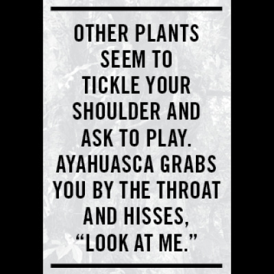

This is not enlightenment
An unholy trip in the Ozarks

Illustration by Morgan Welch
“Maelstrom” is a word that works. An eyes open-or-closed maelstrom of guilt, loss, and paranoia. Every Christmas present I never thanked my parents for, and the hours they worked to get it. Friends I’d lost without telling them I’d loved them. All the times my heart was broken, and the hearts I broke to make myself feel whole. It was a nauseous neon vortex of dead pets, pills, nukes, needles, and roaches—all spiraling up my spine and through my skull. I grabbed my vomit pail and walked towards the moonlight.
“What do I do if I shit my pants?” I asked two weeks earlier.
“B glad UR in good company,” Phil texted back.
That query was the last of a texting inquisition. Phil exchanged questions of money, diet, and confidentiality between a ritual contact and me. The first question, “can you be my sub for the aya ritual on sat?” came from Phil and deserved brevity. “Hell yes” was my answer. I would get in a car with complete strangers, go to an undisclosed wooded area, and do a strong hallucinogen under the direction of a shaman. My responses to the questions were satisfying, and a meeting was arranged.
Ayahuasca is a entheogenic substance largely associated with shamanic ritual use in the Amazon. The brew made from its vines produces intense hallucinations that many of its users describe as spiritual and religious experiences. In recent years, ayahuasca has seen a surge in popularity among westerners, with many heading to the Amazon for retreats. Some view this trend in a negative light, as the increasing global demand has strained the supply of the slow-growing vine that is sacred to indigenous tribes. The trend has also drawn concerns of cultural appropriation, with critics arguing that the increased interest from the western world is bastardizing a sacred ritual.
“As ayahuasca has become more and more popular with foreign tourists—and at the same time, less and less popular with the Indians themselves—we have found that pseudo shamans have sprung up everywhere to cater for the demand,” Valerie Meikle, a Reiki master and holistic healer who lives outside of Leticia, Colombia, told Vice earlier this year.
In spite of the criticism, some westerners that participate in these retreats view the experience as nothing short of sacred. A friend of mine made such a trip to Peru and spent the week tripping in the forest under a shaman’s direction. He told me he experienced “lots of self-doubt and anger culminating in a night of utter despair, during which I was confronted with the real problem that I was there to solve: self-destruction.” Upon returning, he found a previously unknown level of personal peace, and gave up alcohol and tobacco entirely.
Darlene and I met in the corner of a coffee house, where the lights were dim and our words hardly carried. She possessed a motherly warmth, evident even as she eyed me cautiously over her steaming mug.
Could I keep a secret? Had I experienced something like this? What was my intent? I answered the questions well, and was granted attendance, but the question of intent weighed on me leading up to the ritual.
The next week was spent fasting in preparation. Not only did I follow a strict diet of steamed fish and rice, I abstained from alcohol, caffeine, and sugar of any kind. I also fasted mentally. The Syrian Civil War had recently erupted, and I resisted every urge to follow its news cycle. All interest in current events and social media was sacrificed, and my free time was spent praying and growing an inner calm. During a case of sleep paralysis that week, I believed I was pinned to my bed by the spirit of a green woman. I chalked it up to low blood sugar.
On the day of the ritual, Darlene and her friend, Anna, picked me up from my apartment. They kindly offered me potato chips and a ham sandwich.
“Oh, I’ve been fasting all week,” I said. They both laughed.
“Honey, we’ve done this a hundred times,” Anna said. “That fast stuff is nonsense.”
Less than ten minutes into the 90-minute drive, conversation between the women switched to Ron Paul and drone strikes. I tried to tune out without seeming rude. I put on headphones and did a breathing exercise.
The house was in a cul-de-sac at the end of an upper-middle-class Joplin neighborhood. The lawn had fallen into disrepair, and large weeds obscured the walkway and climbed into an above-ground pool. A neglected horse was chained to a fence, its ribcage visible in the evening’s dwindling light. I followed Darlene and Anna up the overgrown path to the front door, where a middle-aged man wearing only a flower-print skirt greeted us.
“Are we in the right place?” Darlene asked.
The man replied, “I don’t know, are you?”
He laughed and invited us in. He introduced me to the shaman, an American native to the Ozarks who’d returned home from his compound in Peru to visit his dying mother. When Darlene heard he’d be in town, she contacted him to set up a ritual.
“You know, I’ve been sneaking into the hospital and putting a little bit of the teacher in her drinks,” the shaman said. “She doesn’t know I’m doing it, but she’ll tell me little fairies are talking to her!”
He laughed, and so did the rest of the group. Apart from our Okie trio were the man in the skirt who owned the home and his teenage son.
Several industrial sized bags of flea powder were strewn about the house, in some places spilling into ashy mounds. A bomb shelter had been turned into an occult library, and the living room was littered with chiropractic equipment.
“They’re after me,” the shaman told the group, regaining my attention. “Oh, the feds are trying to get me for taxes, and I just know they’re why I got stopped at customs.”
He went on to tell us about the brujerias in Peru who were also after him, and how they could step on someone’s shadow and bewitch them into suicide. Someone asked about assassinations in Peru, and I suddenly wished we were discussing Ron Paul.
Once the sun had completely set, we made our descent to the grotto. Moonlight found its way through the thicket, but flashlights were needed to navigate the steep trail, which was dotted with horse droppings.
We found a large blanket and campfire at the bottom of the trail, and the skirted man’s dog darted back and forth in the clearing. The nature of his play was neurotic, “chasing” stationary leaves, stopping only to gnaw at his fleabites. The parasites were so incessant he had chewed an oozing hole into his leg.
“Can’t you just put him in the house?” the son asked his dad. His friend and girlfriend, visibly uneasy, had recently joined us.
“What’s a house without people?” he replied with a smile. “We are the house.”
There was a faint collective sigh from the group before the dog’s leaf hunt sent him crashing onto the blanket, nearly spilling the shaman’s brew.
The dog eventually calmed down, and rested on my lap.
“You’ve found a friend,” the shaman said. The group laughed, and he silenced them, before calling us one at a time to drink. The girlfriend still looked uneasy, but the son assured her when her name was called.

“Is this like the stuff you had the other night?” the son asked the shaman. “That stuff got me fucked up,” he said proudly, resting his hand on his nervous girlfriend’s leg.
When the skirted man was called forward, he drank three times. The shaman cautioned him to take it easy.
Finally, the shaman called me. Crossing the blanket, I knelt before him and drank.
“Thank you,” I said. His eyes greeted mine earnestly, as if to say, “No, thank you.”
The taste was bearable, though thick as Robitussin, and earthy. The flavor, somewhere between grape and licorice, flooded my mouth. My gag reflex protested, telling me I’d really done it this time.
There was an intense quiet for several minutes, during which no one spoke and even the nighttime symphony of crickets subsided. The silence was broken by a clatter of bird wings that echoed into infinity like a looping barrage of cocking guns, and the shaman began to chant violently.
“You actually really have done it this time,” I thought. And I had.
The shaman walked from person to person, banging a drum and blowing tobacco in our faces. As soon as he stopped chanting, the world went dark. I am far from a psychonaut, but this wasn’t my first entheogen rodeo—though it was certainly the worst. Other plants seem to tickle your shoulder and ask to play. Aya grabs you by the throat and hisses, “Look at me.”
The flood of self-hatred came winding up and around my intestines. It seemed to physically squeeze and suffocate my body with psychological distress. I felt worthless. I felt neglectful and evil, like my life up to that moment had been no better cared for than the skeletal horse I’d pitied earlier. The dog was still on my lap, and I could not stretch out for comfort, so I reclined backwards with my legs crossed. The thoughts came in a flood, capsizing any grip I had on the corporeal. I felt sick, my head spinning with disdain, and I immediately returned upright and opened my eyes. The entire world was made of snakes and crime scene photos, surging
around me with a definition transcending hallucination. In horror, I pushed the dog from my lap and stumbled from the campfire.
At the edge of the clearing, I felt I would vomit. I needed to vomit. I had consumed nothing but water and the brew in the last 24 hours; it was the ideas my body wished to purge. I lowered to my palms and knees, my back parallel to the ground. A voice in my head drowned out all the others and began to repeat a single word.
“Submit.”
At first I didn’t understand why I was thinking this and why it was so incredibly loud, but as it repeated I began to push my face to the ground. “Submit,” it boomed with increasing intensity. “Submit.” When finally my face reached the ground, I realized I was in a prayer position, and I submitted each muscle in my body.
Everything stopped.
I stood up, and saw the campground in great clarity. When I’d left its safety earlier, the woods seemed miles away. I didn’t take steps as much as I raised and lowered my feet, and saw the ground rush to meet them. With the storm’s passing, I could see I had walked maybe fifteen feet. The shaman resumed chanting, and I easily made my way back to the group.
The dad, who’d drunk three doses of the brew, was jabbering to himself uncontrollably. He was rolling on the ground, not so much speaking in tongues, but cooing like an infant while uttering lewd exaltations. The rest of the group seemed annoyed by him, and sure enough, the shaman made his way over to the man.
“Dave,” he said. “You are ruining the ceremony. Please stop.”
The man continued to coo, ooh and ah, and gurgle “oh yes ... oh yes!” His son was across from me, wrapping his arms around his date; her eyes met mine with a look of horrified confusion.
Like a man who feared he had heard an intruder in his yard only to find a stray cat, I began to anxiously chuckle at the newfound lightness and absurdity of the situation.
“This is not enlightenment,” I told myself.
The dog once again sat in my lap. I attempted to push him and his open wound away, but he saw it as a sign of affection and climbed further up my chest, trying to lick my face. The game continued for several rounds until I thought “I am this dog.” To my parents, to my friends who have tolerated my shortcomings, to anyone that had ever helped me...I had been this dog. We had all been dogs on the laps of others our entire lives.
In the hallucination, I saw myself in a car crash, steering column crushing my ribs, and flames licking at my feet. I called my parents’ home phone and left them a voice mail letting them know I was dying. I apologized for any ounce of pain I had ever caused them, and screamed how much I loved them. I screamed I could never find the words to begin to explain my love and appreciation for them. I begged them to pass my message onto my friends. I loved them all and was ashamed I could not tell them. I found myself crying for the Soviet space dogs that were lost in orbit, that we may someday escape the planet we had forsaken with our own species. I thought about Hank Hill quite a bit.
Then I laughed.
I lay back again with my legs crossed, petting the dog on my lap. I saw a cluster of UFOs above, their presence one of palpable benevolence, and more material than the night’s earlier aberrations.
“Anywhere you like,” the shaman told someone behind me. “That’s what the forest is for.” My temporary peace was shattered with the sound of dropping trousers and defecation five feet from my head.
The arrival of dawn brought an end to the night’s vibrations, and after a closing speech from the shaman, our group packed up camp. We began our ascent from the grotto to civilization, navigating up through the horseshit and darkness towards the patio lights.
Finding my phone in the house, I instantly text-messaged as many people as I could think of to let them know just how much I loved them.
I put my phone in my pocket and immediately vomited.
For more from Mitch, read his profile of Andey Delesdernier, a.k.a DJ Afistaface.
.jpg)
.jpg)